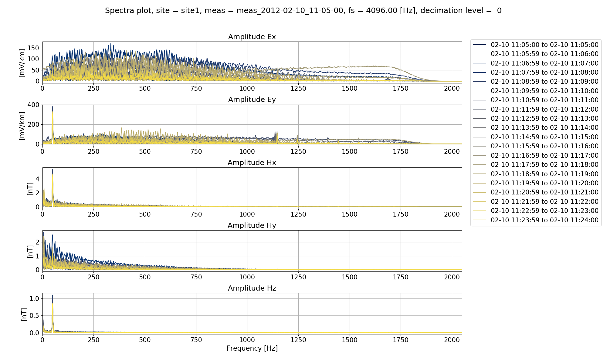
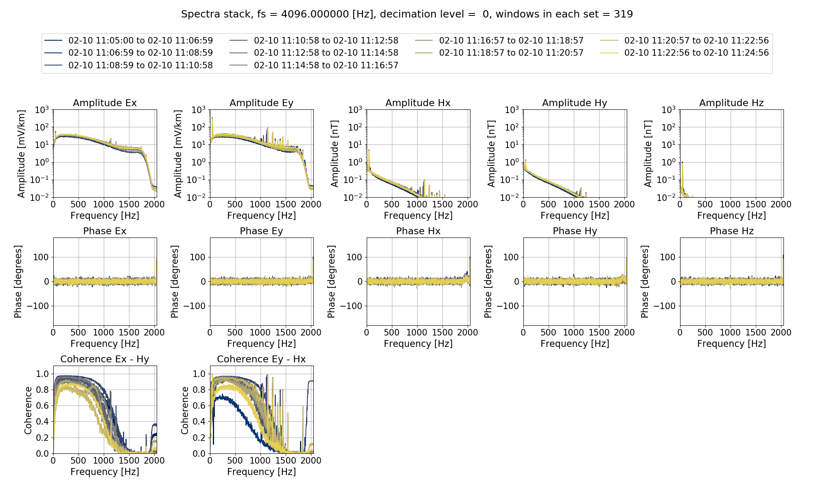
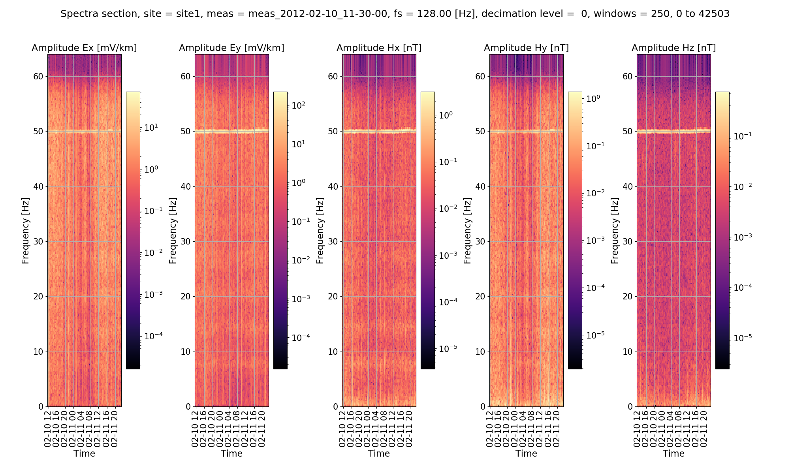

Viewing spectra¶
Spectra data is stored in the following locations.
exampleProject
├── calData
├── timeData
│ └── site1
| |── dataFolder1
│ |── dataFolder2
| |── .
| |── .
| |── .
| └── dataFolderN
├── specData
│ └── site1
| |── dataFolder1
| | └── spectra
│ |── dataFolder2
| | └── spectra
| |── .
| |── .
| |── .
| └── dataFolderN
| └── spectra
├── statData
├── maskData
├── transFuncData
├── images
└── mtProj.prj
Each spectra file that is calculated is written out with a set of comments. The comment file is a text file that can be opened in any text editor and records the various parameters used when calculating out spectra. An example is given below.
Unscaled data 2012-02-10 11:05:00 to 2012-02-10 11:24:59.999756 read in from measurement exampleProject\timeData\site1\meas_2012-02-10_11-05-00, samples 0 to 4915199
Sampling frequency 4096.0
Removing gain and scaling electric channels to mV/km
Remove zeros: False, remove nans: False, remove average: True
---------------------------------------------------
Calculating project spectra
Using default configuration
Channel Ex not calibrated
Channel Ey not calibrated
Channel Hx calibrated with calibration data from file exampleProject\calData\Hx_MFS06365.TXT
Channel Hy calibrated with calibration data from file exampleProject\calData\Hy_MFS06357.TXT
Channel Hz calibrated with calibration data from file exampleProject\calData\Hz_MFS06307.TXT
Decimating with 7 levels and 7 frequencies per level
Evaluation frequencies for this level 1024.0, 724.0773439350246, 512.0, 362.0386719675123, 256.0, 181.01933598375615, 128.0
Windowing with window size 2048 samples and overlap 512 samples
Time data decimated from 4096.0 Hz to 512.0 Hz, new start time 2012-02-10 11:05:00, new end time 2012-02-10 11:24:59.998047
Evaluation frequencies for this level 90.50966799187808, 64.0, 45.25483399593904, 32.0, 22.62741699796952, 16.0, 11.31370849898476
Windowing with window size 512 samples and overlap 128 samples
Time data decimated from 512.0 Hz to 64.0 Hz, new start time 2012-02-10 11:05:00, new end time 2012-02-10 11:24:59.984375
Evaluation frequencies for this level 8.0, 5.65685424949238, 4.0, 2.82842712474619, 2.0, 1.414213562373095, 1.0
Windowing with window size 512 samples and overlap 128 samples
Time data decimated from 64.0 Hz to 8.0 Hz, new start time 2012-02-10 11:05:00, new end time 2012-02-10 11:24:59.875000
Time data decimated from 8.0 Hz to 4.0 Hz, new start time 2012-02-10 11:05:00, new end time 2012-02-10 11:24:59.750000
Evaluation frequencies for this level 0.7071067811865475, 0.5, 0.35355339059327373, 0.25, 0.17677669529663687, 0.125, 0.08838834764831843
Windowing with window size 512 samples and overlap 128 samples
Spectra data written out to exampleProject\specData\site1\meas_2012-02-10_11-05-00\spectra on 2019-03-03 19:33:27.595114
---------------------------------------------------
There are a number of methods in projectSpectra that can be used to visualise spectra.

Plot of the tipper result when Hz is set as the only output channel
Plot of the tipper result when Hz is set as the only output channel

Plot of the tipper result when Hz is set as the only output channel
For the 128Hz data

Plot of the tipper result when Hz is set as the only output channels
Plot of the tipper result when Hz is set as the only output channel